Getting Started with NNS: Clustering and Regression
Fred Viole
Source:vignettes/NNSvignette_07_Clustering_and_Regression.Rmd
NNSvignette_07_Clustering_and_Regression.RmdClustering and Regression
Below are some examples demonstrating unsupervised learning with NNS clustering and nonlinear regression using the resulting clusters. As always, for a more thorough description and definition, please view the References.
NNS Partitioning NNS.part()
NNS.part is both a partitional and
hierarchical clustering method. NNS iteratively partitions
the joint distribution into partial moment quadrants, and then assigns a
quadrant identification (1:4) at each partition.
NNS.part returns a
data.frame of observations along with their final quadrant
identification. It also returns regression points that summarize
observations within occupied cells. Their location follows the chosen
reduction rule; these points support the subsequent
NNS.reg fit.
x = seq(-5, 5, .05); y = x ^ 3
for(i in 1 : 4){NNS.part(x, y, order = i, Voronoi = TRUE, obs.req = 0)}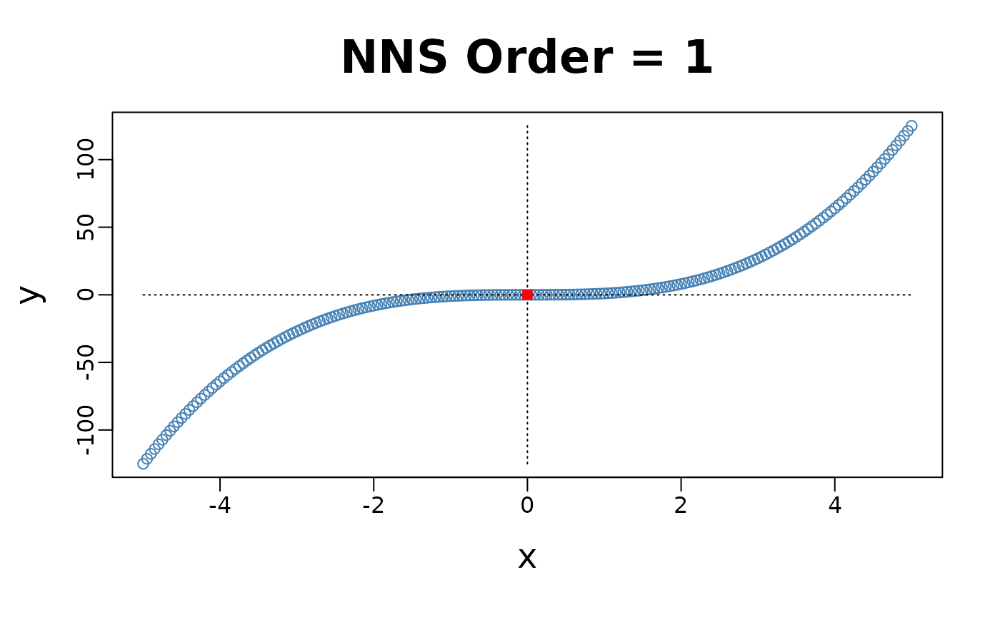
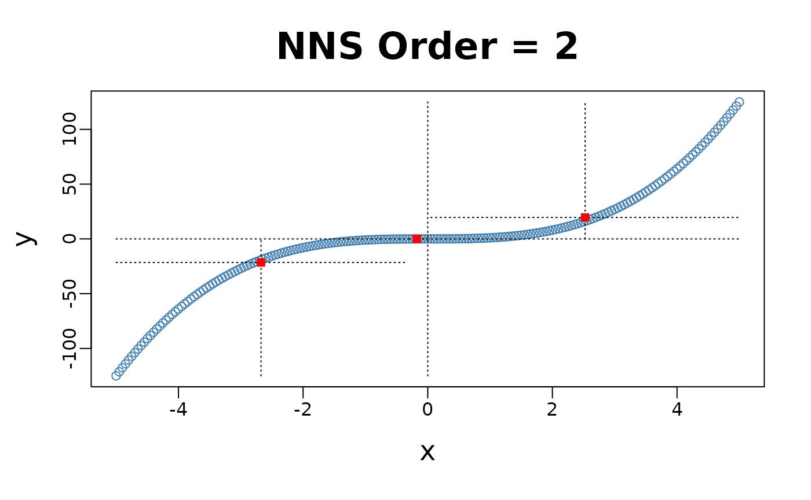
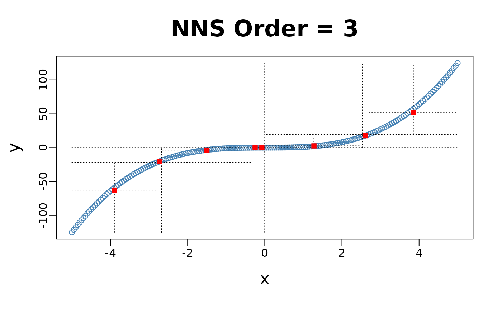
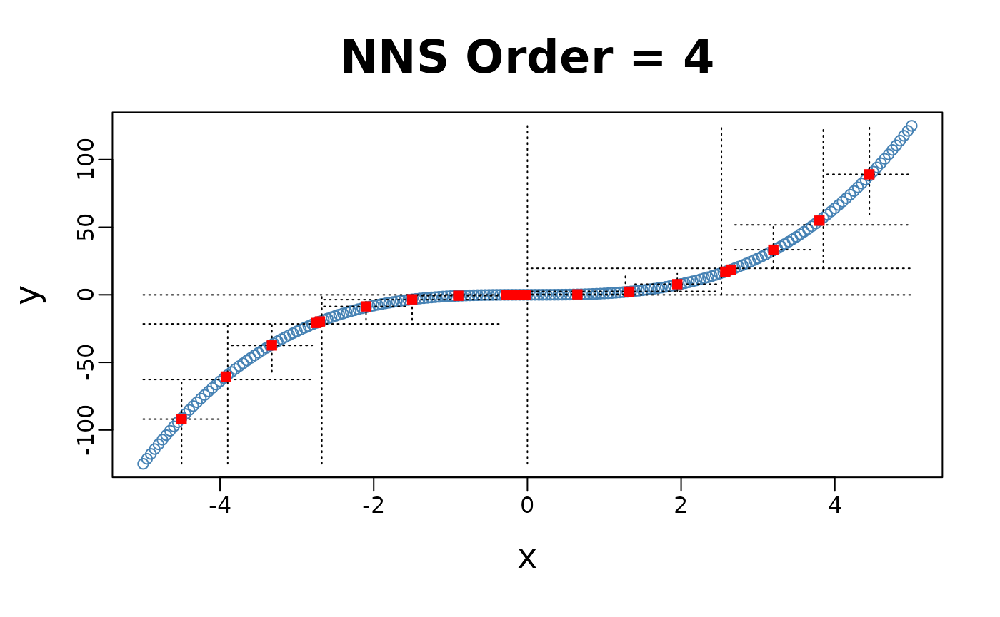
X-only Partitioning
NNS.part offers a partitioning based on
values only
NNS.part(x, y, type = "XONLY", ...), using
the response observations within each predictor cell to form regression
points. Consistency requires suitable shrinking cells and growing cell
occupancy; a fixed order or occupancy cutoff alone does not establish
those conditions.
for(i in 1 : 4){NNS.part(x, y, order = i, type = "XONLY", Voronoi = TRUE)}


Note the partition identifications are limited to 1’s and 2’s (left and right of the partition respectively), not the 4 values per the and partitioning.
## $order
## [1] 4
##
## $dt
## x y quadrant prior.quadrant
## 1 -5.00 -125.0000 q1111 q111
## 2 -4.95 -121.2874 q1111 q111
## 3 -4.90 -117.6490 q1111 q111
## 4 -4.85 -114.0841 q1111 q111
## 5 -4.80 -110.5920 q1111 q111
## 6 -4.75 -107.1719 q1111 q111
## ---
## x y quadrant prior.quadrant
## 196 4.75 107.1719 q2222 q222
## 197 4.80 110.5920 q2222 q222
## 198 4.85 114.0841 q2222 q222
## 199 4.90 117.6490 q2222 q222
## 200 4.95 121.2874 q2222 q222
## 201 5.00 125.0000 q2222 q222
## --- [ 201 rows x 4 cols ]; showing first and last 6. Use as.data.frame(x) for all. ---
##
## $regression.points
## quadrant x y
## 1 q111 -4.375 -84.9871094
## 2 q112 -3.100 -30.6047500
## 3 q121 -1.850 -5.8342500
## 4 q122 -0.600 -0.2723437
## 5 q211 0.650 0.3331250
## 6 q212 1.900 6.2745313
## 7 q221 3.150 28.9026563
## 8 q222 4.400 79.7522344Clusters Used in Regression
The right column of plots shows the corresponding regression (plus
endpoints and central point) for the order of NNS
partitioning.
for(i in 1 : 3){NNS.part(x, y, order = i, obs.req = 0, Voronoi = TRUE, type = "XONLY") ; NNS.reg(x, y, order = i, ncores = 1)}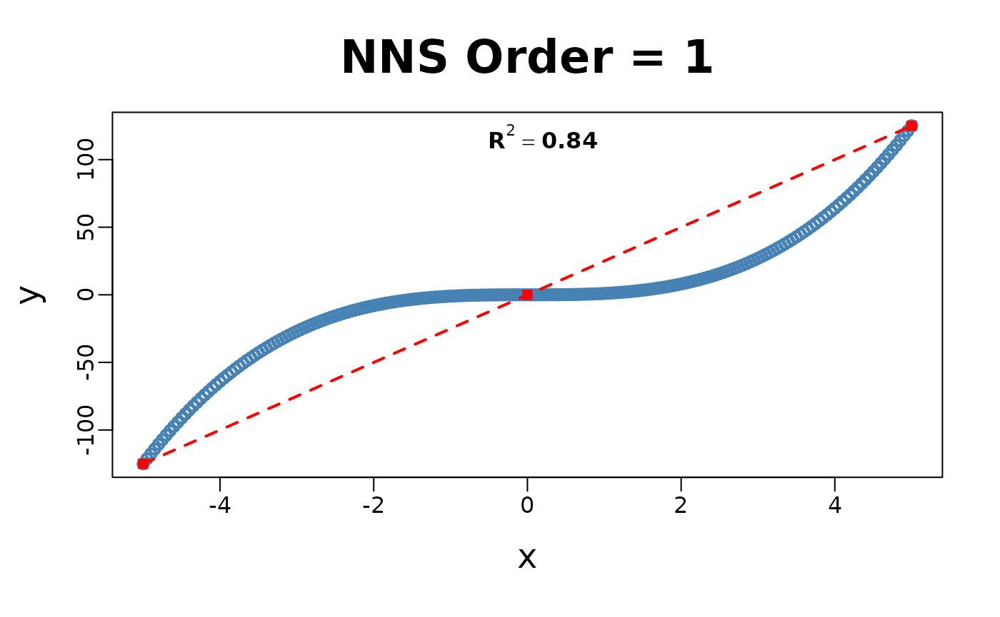
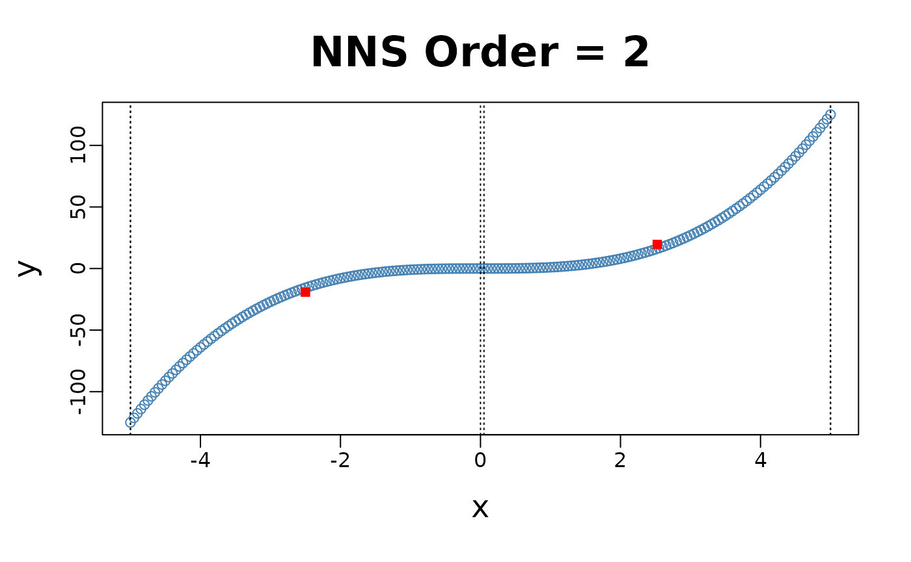
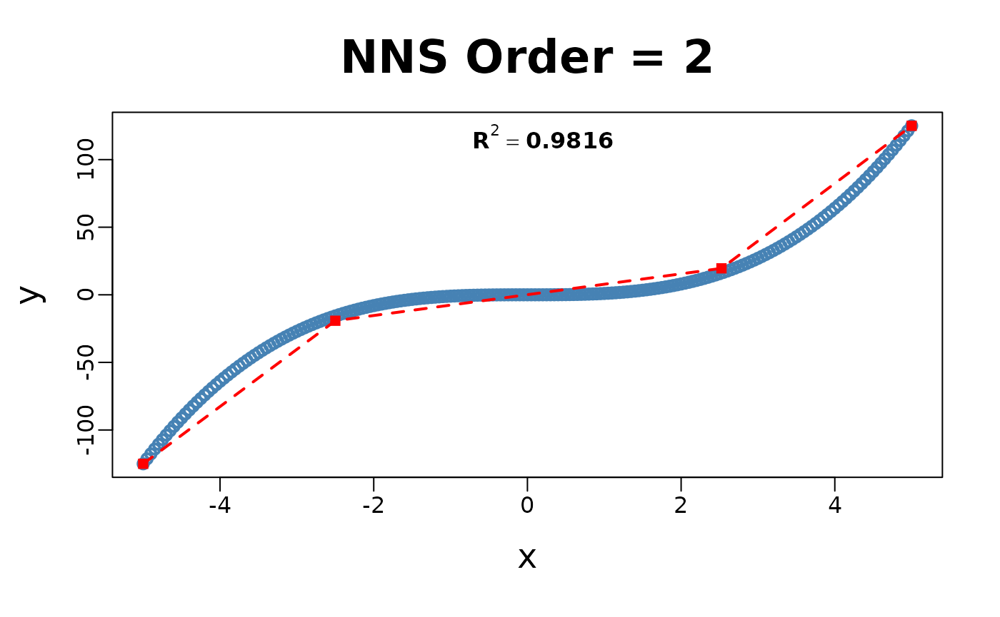
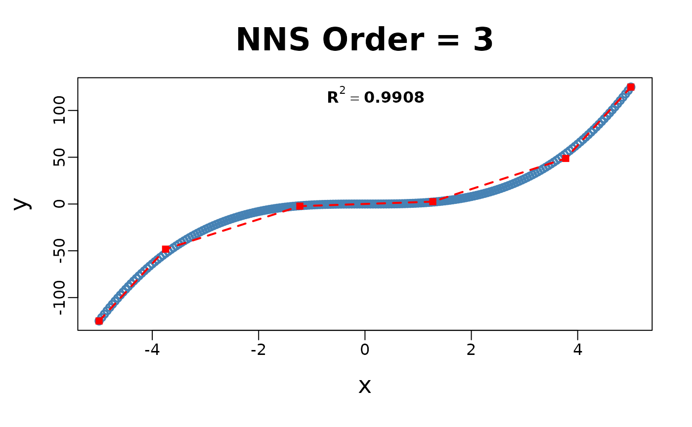
NNS Regression NNS.reg()
NNS.reg estimates nonlinear
relationships in univariate and multivariate settings using partition
summaries and interpolation or distance weighting. Its fit depends on
the observed support, selected resolution, and reduction rule. The
examples below show its main outputs. Set type = "REG" when
a numeric response should be treated as regression even if its values
could trigger automatic classification.
Univariate:
NNS.reg(x, y, ncores = 1)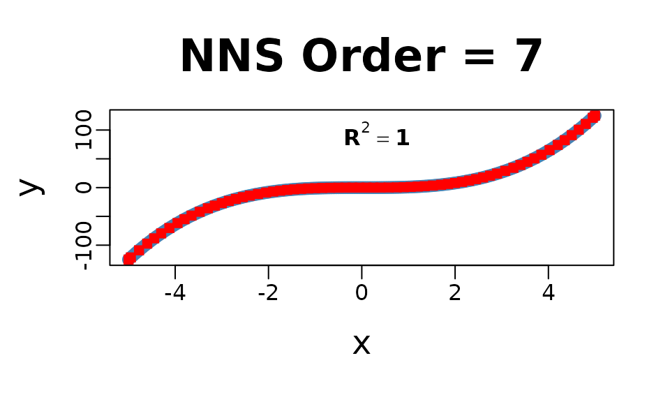
## $R2
## [1] 0.9999996
##
## $SE
## [1] 0.04417645
##
## $Prediction.Accuracy
## NULL
##
## $equation
## NULL
##
## $x.star
## NULL
##
## $derivative
## Coefficient X.Lower.Range X.Upper.Range
## 1 74.25250 -5.000 -4.950
## 2 70.76031 -4.950 -4.775
## 3 66.10469 -4.775 -4.600
## 4 61.43250 -4.600 -4.450
## 5 57.42750 -4.450 -4.300
## 6 53.08844 -4.300 -4.125
## ---
## 60 54.8325 4.20 4.35
## 61 58.7475 4.35 4.50
## 62 62.7975 4.50 4.65
## 63 66.9825 4.65 4.80
## 64 71.3025 4.80 4.95
## 65 74.2525 4.95 5.00
## --- [ 65 rows x 3 cols ]; showing first and last 6. Use as.data.frame(x) for all. ---
##
## $Point.est
## NULL
##
## $pred.int
## NULL
##
## $regression.points
## x y
## 1 -5.000 -125.00000
## 2 -4.950 -121.28738
## 3 -4.775 -108.90432
## 4 -4.600 -97.33600
## 5 -4.450 -88.12113
## 6 -4.300 -79.50700
## ---
## x y
## 61 4.35 82.31287
## 62 4.50 91.12500
## 63 4.65 100.54463
## 64 4.80 110.59200
## 65 4.95 121.28738
## 66 5.00 125.00000
## --- [ 66 rows x 2 cols ]; showing first and last 6. Use as.data.frame(x) for all. ---
##
## $Fitted.xy
## x y y.hat NNS.ID gradient residuals
## 1 -5.00 -125.0000 -125.0000 1 74.25250 0.00000000
## 2 -4.95 -121.2874 -121.2874 2 70.76031 0.00000000
## 3 -4.90 -117.6490 -117.7494 2 70.76031 -0.10035937
## 4 -4.85 -114.0841 -114.2113 2 70.76031 -0.12721875
## 5 -4.80 -110.5920 -110.6733 2 70.76031 -0.08132812
## 6 -4.75 -107.1719 -107.2517 3 66.10469 -0.07982812
## ---
## x y y.hat NNS.ID gradient residuals
## 196 4.75 107.1719 107.2429 63 66.9825 0.07100
## 197 4.80 110.5920 110.5920 64 71.3025 0.00000
## 198 4.85 114.0841 114.1571 64 71.3025 0.07300
## 199 4.90 117.6490 117.7223 64 71.3025 0.07325
## 200 4.95 121.2874 121.2874 65 71.3025 0.00000
## 201 5.00 125.0000 125.0000 65 74.2525 0.00000
## --- [ 201 rows x 6 cols ]; showing first and last 6. Use as.data.frame(x) for all. ---
##
## $class.levels
## NULLMultivariate:
Multivariate regressions return a plot of
and
,
as well as the regression points ($RPM) and partitions
($rhs.partitions) for each regressor.
f = function(x, y) x ^ 3 + 3 * y - y ^ 3 - 3 * x
y = x ; z <- expand.grid(x, y)
g = f(z[ , 1], z[ , 2])
NNS.reg(z, g, order = "max", plot = FALSE, ncores = 1)## $R2
## [1] 1
##
## $rhs.partitions
## Var1 Var2
## 1 -5.00 -5.00
## 2 -4.95 -4.95
## 3 -4.90 -4.90
## 4 -4.85 -4.85
## 5 -4.80 -4.80
## 6 -4.75 -4.75
## ---
## Var1 Var2
## 196 4.75 4.75
## 197 4.80 4.80
## 198 4.85 4.85
## 199 4.90 4.90
## 200 4.95 4.95
## 201 5.00 5.00
## --- [ 201 rows x 2 cols ]; showing first and last 6. Use as.data.frame(x) for all. ---
##
## $RPM
## Var1 Var2 y.hat
## 1 -5 -5.00 0.00000
## 2 -5 -4.55 -29.45363
## 3 -5 -0.05 -110.14988
## 4 -5 0.00 -110.00000
## 5 -5 0.05 -109.85012
## 6 -5 0.10 -109.70100
## ---
## Var1 Var2 y.hat
## 40396 -0.1 -0.35 -0.708125
## 40397 -0.1 -0.30 -0.574000
## 40398 -0.1 -0.25 -0.435375
## 40399 -0.1 -0.20 -0.293000
## 40400 -0.1 -0.15 -0.147625
## 40401 -0.1 -0.10 0.000000
## --- [ 40401 rows x 3 cols ]; showing first and last 6. Use as.data.frame(x) for all. ---
##
## $Point.est
## NULL
##
## $pred.int
## NULL
##
## $Fitted.xy
## Var1 Var2 y y.hat NNS.ID residuals
## 1 -5.00 -5 0.000000 0.000000 1.1 0
## 2 -4.95 -5 3.562625 3.562625 2.1 0
## 3 -4.90 -5 7.051000 7.051000 3.1 0
## 4 -4.85 -5 10.465875 10.465875 4.1 0
## 5 -4.80 -5 13.808000 13.808000 5.1 0
## 6 -4.75 -5 17.078125 17.078125 6.1 0
## ---
## Var1 Var2 y y.hat NNS.ID residuals
## 40396 4.75 5 -17.078125 -17.078125 196.201 0
## 40397 4.80 5 -13.808000 -13.808000 197.201 0
## 40398 4.85 5 -10.465875 -10.465875 198.201 0
## 40399 4.90 5 -7.051000 -7.051000 199.201 0
## 40400 4.95 5 -3.562625 -3.562625 200.201 0
## 40401 5.00 5 0.000000 0.000000 201.201 0
## --- [ 40401 rows x 6 cols ]; showing first and last 6. Use as.data.frame(x) for all. ---
##
## $n.best
## [1] 1
##
## $dist
## [1] "NNS"Inter/Extrapolation
NNS.reg can inter- or extrapolate any point of interest.
The NNS.reg(x, y, point.est = ...)
parameter permits any sized data of similar dimensions to
and called specifically with
NNS.reg(...)$Point.est.
NNS Dimension Reduction Regression
dim.red.method = "cor" builds a signed synthetic
predictor from the selected correlations. For a continuous response,
$equation reports its coefficients and denominator. The
response is fitted as a nonlinear function of that index; the index
itself is not a linear prediction equation for the response.
regression_x <- iris[, 2:4]
regression_y <- iris$Sepal.Length
reduced <- NNS.reg(regression_x, regression_y, dim.red.method = "cor",
plot = FALSE, ncores = 1)
reduced$equation## Variable Coefficient
## 1 Sepal.Width -0.1667777
## 2 Petal.Length 0.8818981
## 3 Petal.Width 0.8342888
## 4 DENOMINATOR 3.0000000With retained coefficients , the index is , and the regression estimates a function .
Threshold
threshold retains coefficients whose absolute
association meets the cutoff. This controls which coordinates contribute
to the synthetic index; it does not establish a significance level.
reduced_threshold <- NNS.reg(regression_x, regression_y,
dim.red.method = "cor", threshold = .75,
point.est = regression_x[1:10, ],
plot = FALSE, ncores = 1)
reduced_threshold$equation## Variable Coefficient
## 1 Sepal.Width 0.0000000
## 2 Petal.Length 0.8818981
## 3 Petal.Width 0.8342888
## 4 DENOMINATOR 2.0000000
reduced_threshold$Point.est## [1] 4.984375 4.984375 4.833689 5.085714 4.984375 5.183574 4.980726 5.085714
## [9] 4.984375 4.831294Classification
Set type = "CLASS" for nominal classes. Factor,
character, logical, and numeric 0/1 responses are
classified automatically. Numeric class values need not start at one.
Factor and character predictions retain numeric codes with the mapping
returned in $class.levels.
classification <- NNS.reg(iris[, 1:4], iris$Species, type = "CLASS",
point.est = iris[1:10, 1:4], plot = FALSE, ncores = 1)
classification$class.levels[classification$Point.est]## [1] "setosa" "setosa" "setosa" "setosa" "setosa" "setosa" "setosa" "setosa"
## [9] "setosa" "setosa"
classification$Point.probabilities## setosa versicolor virginica
## [1,] 1 0 0
## [2,] 1 0 0
## [3,] 1 0 0
## [4,] 1 0 0
## [5,] 1 0 0
## [6,] 1 0 0
## [7,] 1 0 0
## [8,] 1 0 0
## [9,] 1 0 0
## [10,] 1 0 0With dimension reduction, classification uses one signed index per
class indicator. Its $equation is therefore a named list,
with one equation per class. Class probabilities are combined before
labels are chosen; the numeric labels are never interpolation
coordinates.
class_reduced <- NNS.reg(iris[, 1:4], iris$Species, dim.red.method = "cor",
plot = FALSE, ncores = 1)
class_reduced$equation## $setosa
## Variable Coefficient
## 1 Sepal.Length -0.7495899
## 2 Sepal.Width 0.6225472
## 3 Petal.Length -0.8173813
## 4 Petal.Width -0.8205282
## 5 DENOMINATOR 4.0000000
##
## $versicolor
## Variable Coefficient
## 1 Sepal.Length 0.11686803
## 2 Sepal.Width -0.48249049
## 3 Petal.Length 0.01454939
## 4 Petal.Width 0.01608235
## 5 DENOMINATOR 4.00000000
##
## $virginica
## Variable Coefficient
## 1 Sepal.Length 0.6327219
## 2 Sepal.Width -0.1400567
## 3 Petal.Length 0.8028319
## 4 Petal.Width 0.8044458
## 5 DENOMINATOR 4.0000000These examples demonstrate fitted outputs at training observations. Independent classification accuracy requires heldout observations, as shown in the classification vignette.
Cross-Validation NNS.stack()
The NNS.stack routine cross-validates
for a given objective function the n.best parameter in the
multivariate NNS.reg function as well as
the threshold parameter in the dimension reduction
NNS.reg version.
NNS.stack can be used for
classification:
NNS.stack(..., type = "CLASS", ...)
or continuous dependent variables:
NNS.stack(..., type = "REG", ...).
Any objective function obj.fn can be called using
expression() with the terms predicted and
actual, even from external packages such as
Metrics.
NNS.stack(..., obj.fn = expression(Metrics::mape(actual, predicted)), objective = "min").
set.seed(123)
stack_fit <- NNS.stack(IVs.train = iris[, 1:4],
DV.train = iris$Species,
IVs.test = iris[1:10, 1:4],
dim.red.method = "cor",
obj.fn = expression(mean(predicted == actual)),
objective = "max", type = "CLASS",
folds = 1, ncores = 1, status = FALSE)
stack_fit[c("OBJfn.reg", "OBJfn.dim.red", "NNS.reg.n.best",
"NNS.dim.red.count", "weights", "class.levels")]## $OBJfn.reg
## [1] 0.9722222
##
## $OBJfn.dim.red
## [1] 0.8888889
##
## $NNS.reg.n.best
## [1] 1
##
## $NNS.dim.red.count
## [1] 1
##
## $weights
## reg dim.red
## 0.5446865 0.4553135
##
## $class.levels
## [1] "setosa" "versicolor" "virginica"
stack_fit$class.levels[stack_fit$stack]## [1] "setosa" "setosa" "setosa" "setosa" "setosa" "setosa" "setosa" "setosa"
## [9] "setosa" "setosa"The displayed objectives describe internal tuning folds. The final predictions above are at supplied training rows and are not an independent test score. For nominal models, the selected dimension count is reported directly; a single scalar coefficient threshold cannot summarize the class-specific equations.
Increasing Dimensions
A duplicated predictor changes its weight in the multivariate
geometry and can be used to compare that prediction path with univariate
interpolation. It adds no information. Choose this representation and
the neighbor count n.best using heldout performance:
NNS.stack(IVs.train = cbind(x, x), DV.train = y, method = 1, ...).
set.seed(123)
x = rnorm(100); y = rnorm(100)
nns.params = NNS.stack(IVs.train = cbind(x, x),
DV.train = y,
method = 1, ncores = 1)
duplicated_fit <- NNS.reg(cbind(x, x), y,
n.best = nns.params$NNS.reg.n.best,
point.est = cbind(x, x), plot = FALSE,
residual.plot = FALSE, ncores = 1,
confidence.interval = .95)
plot(x, y, pch = 19, col = "grey60", main = "Tuned multivariate prediction path")
o <- order(x)
lines(x[o], duplicated_fit$Point.est[o], col = "steelblue", lwd = 2)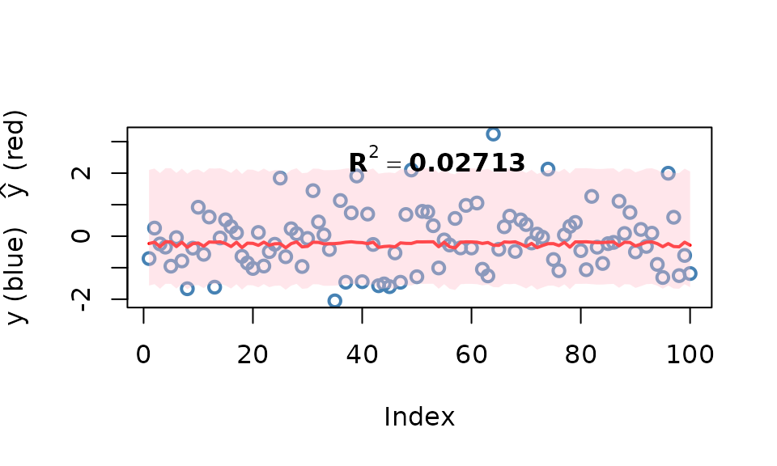
Smoothing Option
Smoothness is not required for curve fitting, but the
NNS.reg function offers an optional smoothed fit. This
feature applies a smoothing spline to regression points generated
internally using the partitioning method described earlier.
NNS.reg(x, y, smooth = TRUE)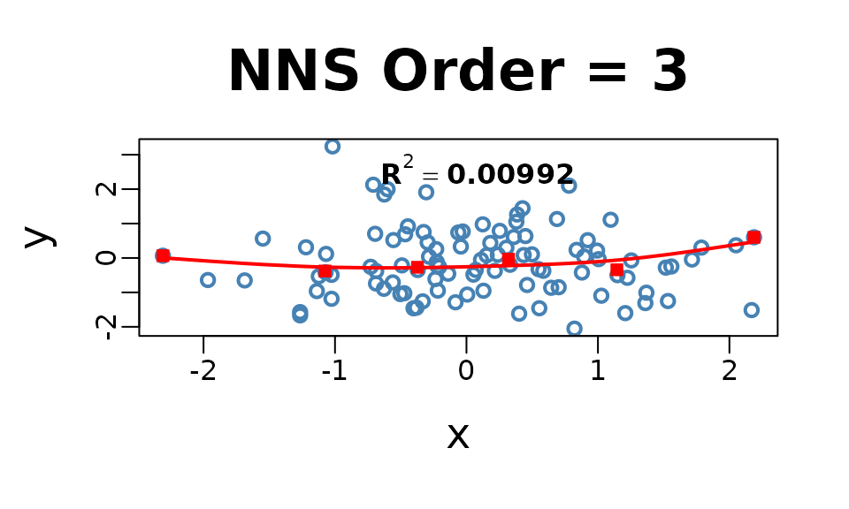
Imputation
Imputation in NNS is a direct application of nearest
neighbor regression. When values of
are missing, we use the observed
pairs as the training set and the predictors of the missing rows as
point.est.
A key insight is that even in univariate regressions,
NNS.reg benefits from the increasing dimensions trick: by
duplicating the predictor into a multivariate form,
e.g. cbind(x, x), the distance function underlying
NNS.reg operates in a 2-D space. This sharpened distance
metric allows a more robust donor selection, effectively turning
univariate imputation into a special case of multivariate nearest
neighbor regression.
For multivariate predictors, the same form applies directly — supply
the full set of observed predictors in
,
the observed responses in
,
and the incomplete rows in point.est. With
order = "max", n.best = 1, the imputation is always 1-NN
donor-based: each missing
is filled in by the response of its closest donor under the
NNS hybrid distance. This ensures imputations remain
strictly within the support of the observed data.
Categorical data is handled analogously, only
requiring NNS.reg(..., type = "CLASS") in the
procedure.
Univariate Imputation
set.seed(123)
# Univariate predictor with nonlinear signal
n <- 400
x <- sort(runif(n, -3, 3))
y <- sin(x) + 0.2 * x^2 + rnorm(n, 0, 0.25)
# Induce ~25% MCAR missingness in y
miss <- rbinom(n, 1, 0.25) == 1
y_mis <- y
y_mis[miss] <- NA
# ---- Increasing dimensions trick ----
# Duplicate x so the distance operates in a 2D space: cbind(x, x).
# This chooses the multivariate neighbor path; duplication adds no information.
x2_train <- cbind(x[!miss], x[!miss])
x2_miss <- cbind(x[miss], x[miss])
# 1-NN donor imputation with NNS.reg
y_hat_uni <- NNS::NNS.reg(
x = x2_train, # predictors (duplicated x)
y = y[!miss], # observed responses
point.est = x2_miss, # rows to impute
order = "max", # maximum requested partition order
n.best = 1, # 1-NN donor
plot = FALSE
)$Point.est
# Fill back
y_completed_uni <- y_mis
y_completed_uni[miss] <- y_hat_uni
# Plot observed vs imputed (NNS 1-NN)
plot(x, y, pch = 1, col = "steelblue", cex = 1.5, lwd = 2,
xlab = "x", ylab = "y", main = "NNS 1-NN Imputation")
points(x[miss], y_hat_uni, col = "red", pch = 15, cex = 1.3)
legend("topleft",
legend = c("Observed", "Imputed (NNS 1-NN)"),
col = c("steelblue", "red"),
pch = c(1, 15),
pt.lwd = c(2, NA),
bty = "n")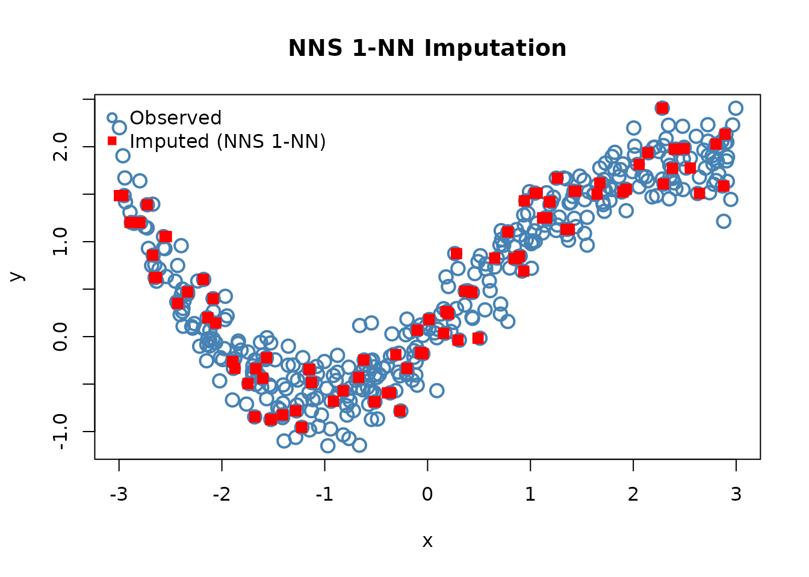
Multivariate Imputation
set.seed(123)
# Multivariate predictors with nonlinear & interaction structure
n <- 800
X <- cbind(
x1 = rnorm(n),
x2 = runif(n, -2, 2),
x3 = rnorm(n, 0, 1)
)
f <- function(x1, x2, x3) 1.1*x1 - 0.8*x2 + 0.5*x3 + 0.6*x1*x2 - 0.4*x2*x3 + 0.3*sin(1.3*x1)
y <- f(X[,1], X[,2], X[,3]) + rnorm(n, 0, 0.4)
# Induce ~30% MCAR missingness in y
miss <- rbinom(n, 1, 0.30) == 1
y_mis <- y
y_mis[miss] <- NA
# Training (observed) vs rows to impute
X_obs <- X[!miss, , drop = FALSE]
y_obs <- y[!miss]
X_mis <- X[ miss, , drop = FALSE]
# 1-NN donor imputation with NNS.reg
y_hat_mv <- NNS::NNS.reg(
x = X_obs, # all observed predictors
y = y_obs, # observed responses
point.est = X_mis, # rows to impute
order = "max", # maximum requested partition order
n.best = 1, # 1-NN donor
plot = FALSE
)$Point.est
# Completed vector
y_completed_mv <- y_mis
y_completed_mv[miss] <- y_hat_mv
# Plot observed vs imputed (multivariate, NNS 1-NN)
plot(seq_along(y), y,
pch = 1, col = "steelblue", cex = 1.5, lwd = 2,
xlab = "Observation index", ylab = "y",
main = "NNS 1-NN Multivariate Imputation")
# Overlay imputed values
points(which(miss), y_hat_mv, pch = 15, col = "red", cex = 1.2)
# Legend
legend("topleft",
legend = c("Observed", "Imputed (NNS 1-NN)"),
col = c("steelblue", "red"),
pch = c(1, 15),
pt.lwd = c(2, NA),
bty = "n")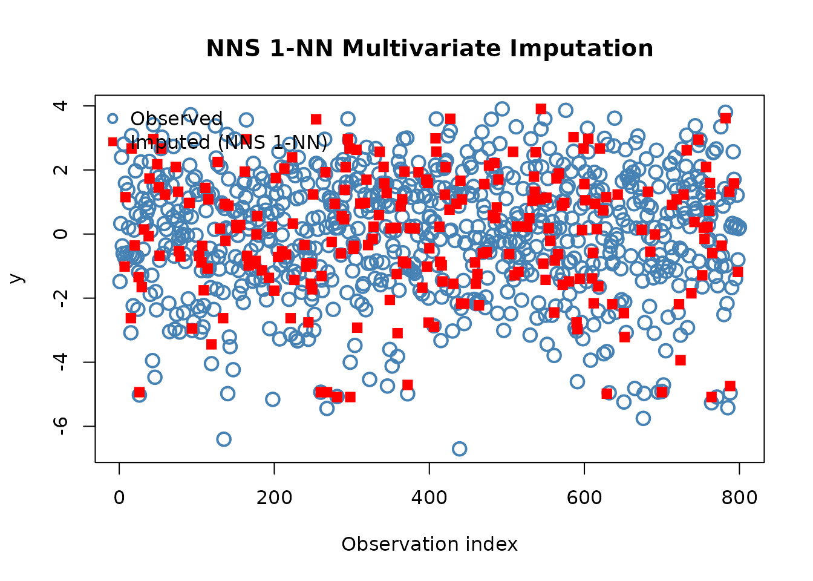
A Note on Uncertainty Propagation
A completed data set does not by itself represent imputation uncertainty. Bootstrap model refits can produce multiple completed data sets, but valid pooled inference also depends on the missingness assumptions, estimand, imputation design, and sampling calibration. Applying Rubin’s pooling formula alone does not establish those conditions. A smaller pooled standard error is not, by itself, evidence of more accurate uncertainty.
NNS Multiple Imputation vs MICE supplies an illustrative simulation. A general comparison requires repeated samples and assessment of bias, interval coverage, and the missingness mechanism.